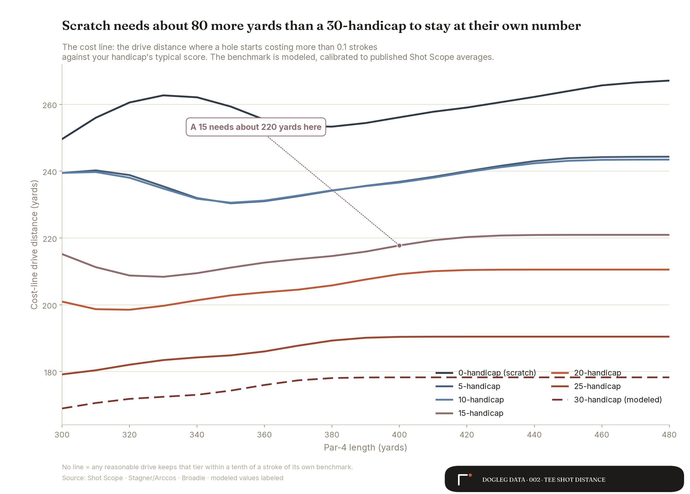
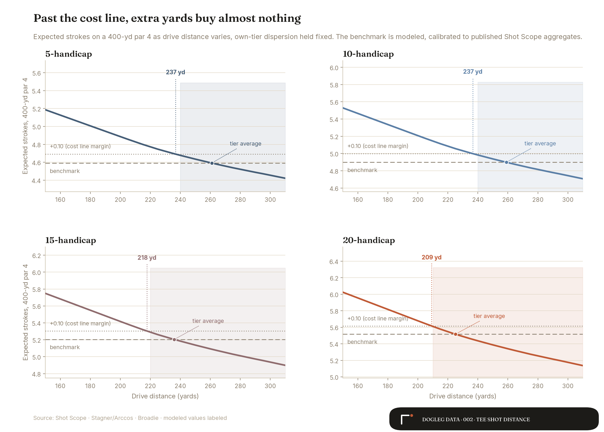
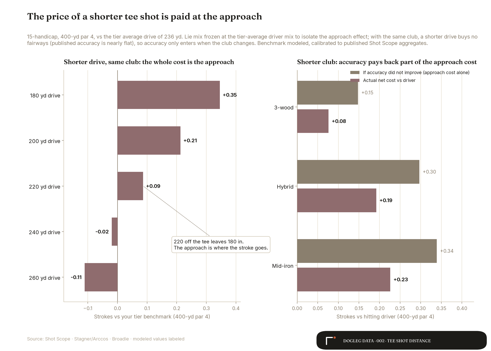
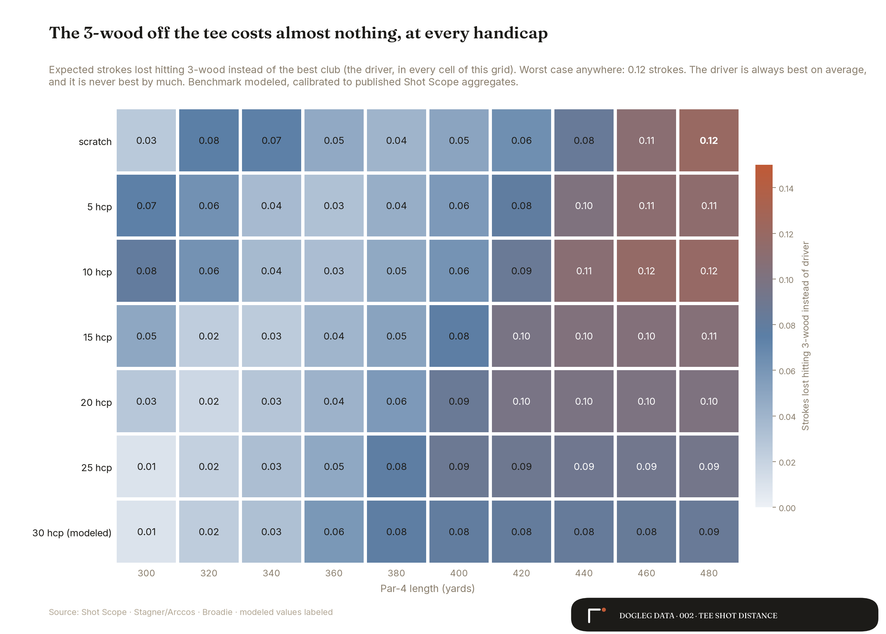
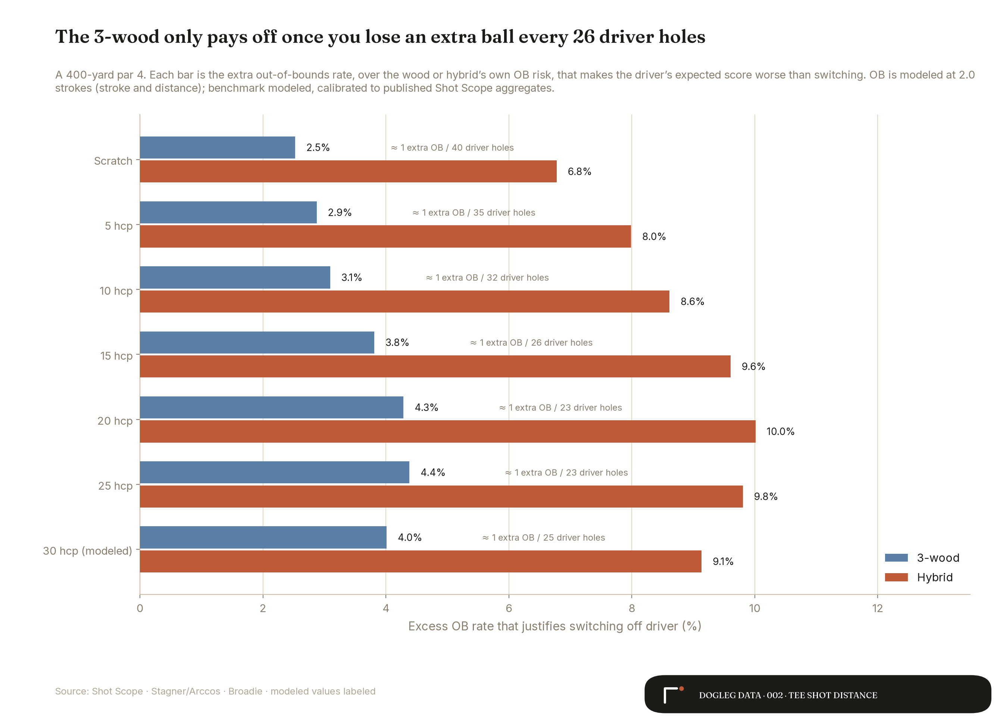
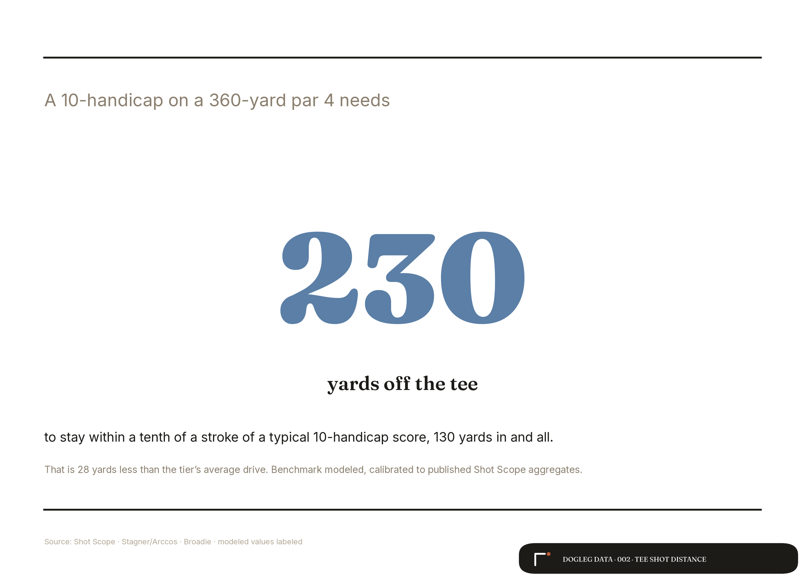

Three days before this analysis started, the Hack It Out Golf podcast ran a Saturday Morning Golf Stat asking one question: "How far do you need to hit it—in the fairway—to break even on a strokes gained against your handicap peers?" Mark Crossfield, Lou Stagner, and Greg Chalmers ran it for scratch and a 10-index on a 400-yard hole. I could not let the question go, so I built the model and ran it at every handicap.
Golf says you need to hit it farther, on every tee box and in every club ad. The strokes disagree. One note on framing before the charts: the episode asks the question for a drive that finds the fairway; this model prices the miss odds too, so fairway, rough, and trouble all weigh in.
The model plays the whole hole, because the tee shot alone can lie to you. A 220-yard drive on a 400-yard par 4 looks harmless until you price the 180-yard approach it creates. So the model prices it: your dispersion sets the odds of fairway, rough, and trouble, the leftover yardage and lie set the expected strokes to hole out, and the sum is an expected score. Strokes gained zero means you played the hole the way your handicap says you should.
The cost line
The number that matters is what I call the cost line: the drive distance below which a hole starts costing you more than a tenth of a stroke against your own number. One shot per ten rounds. Chart 1 draws it for every handicap tier and every par-4 length, and it sits under every tier's average drive, everywhere on the grid.

Read your own row. A 15-handicap on a 400-yard par 4 clears the line at 218 yards, against a 236-yard tier average. A 20-handicap clears it at 209. The gap between tiers is real: scratch needs about 80 more yards than a 30-handicap (a modeled tier) to stay at their own number, because scratch's number is much lower. But within your tier, the drive you already hit carries slack.
Your average drive lives past the line
Chart 2 shows the same fact as a curve. Expected score falls as drives get longer, then flattens, and the shaded zone marks every drive distance that keeps the hole within a tenth of a stroke of your benchmark. The headroom runs from 24 yards for a 5-handicap down to 16 for a 20. You could give back that many yards off your average and the hole would barely notice.

The 180-yard approach, priced
This analysis started with a suspicion about the second shot. Fine, the short drive doesn't cost much off the tee, but now you're staring at 180 in. Doesn't that bill come due somewhere?
It does, and it's the whole bill. When a 15-handicap drives 220 instead of their usual 236 on a 400-yard hole, the cost is 0.09 strokes, and every hundredth of it is the longer approach. The lie mix doesn't move, because with the same club in your hands, a shorter carry buys no fairways. Shot Scope's published accuracy numbers back this up: fairway-hit rates barely move from scratch to 25-handicap.

Accuracy enters when the club changes. The 3-wood gives up 0.15 strokes of approach position and buys back 0.07 of it in tighter misses, for a net cost of 0.08. That trade is the real driver-versus-wood question, and it turns out to be pocket change.
Your par 4, your handicap, your drive.
The calculator behind this post is the working model. It returns your expected score, your strokes gained against your tier, the cost line for the hole, and the club that gives up nothing.
Open the calculatorThe club off the tee barely matters
Chart 4 runs the driver-versus-3-wood trade across the full grid, seven tiers by ten hole lengths. The driver wins every cell on average, and it never wins big. The worst case anywhere is 0.12 strokes, on the longest holes for the tiers that hit it far enough to exploit them. For a 25-handicap on a 320-yard hole, the 3-wood costs 0.02.

So the honest club advice is boring: hit the one you trust. The scorecard cost of the safe club is an eighth of a stroke at worst, and confidence over the ball is worth more than that. Irons are a different story. A 4-iron off the tee costs a 15-handicap 0.23 strokes on a 400-yard hole, a 7-iron costs 0.39, and neither ever wins a single cell of the grid. On a straight par 4 with no forced layup, the iron is a donation.
The move
Four questions came out of that podcast episode and the replies to release 001. The model answers all four.
Do you hit driver on most par 4s? Yes. The driver wins every tier-by-length cell on average. The longest club you can keep on the planet is the percentage play, and your average drive already clears the cost line everywhere.
Is the 3-wood ever worth it off the tee? On an open hole, no. It runs 0.05 to 0.09 strokes behind the driver on a 400-yard hole, depending on tier, and its tighter dispersion never pays back the full distance it gives up. The studies you have read saying the 3-wood is a placebo hold up in this model. What those studies skip is the next question.
So when does the safe club pay? When the driver brings a penalty the safe club avoids. Price it: an out-of-bounds drive costs about two strokes. For a 15-handicap on a 400-yard hole, the 3-wood breaks even once it dodges one extra OB every 26 driver holes. A 20-handicap needs one every 23. Miss OB less than that with the driver and the driver stays; miss more and the 3-wood is a bargain, no swing change required.

Should you build a thriver or buy a 5-wood or 7-wood for the tee? Run the same test. A 5-wood or 7-wood sits between the 3-wood and hybrid rungs, so its break-even sits between one extra OB every 23 and one every 10 driver holes at mid handicaps. Count your last ten rounds. If the driver put you out of bounds twice more than your fairway wood would have, the wood earned the job on those holes. If it went OB once all season, keep swinging the driver and stop shopping.
What this does not say
Two cautions before you screenshot chart 5 at your longest-hitting friend. First, distance still separates tiers. Scratch golfers drive it 285 and 25-handicaps drive it 204 in Shot Scope's data, and that gap is part of why their benchmarks sit four strokes apart on a 400-yard hole. This analysis holds your skill fixed and asks what one hole demands of it; it does not claim distance is worthless in the long run.
Second, the benchmark here is modeled. No published table of par-4 score by hole length by handicap exists, so the model calibrates its own: its expected scores, averaged across a par-4 length mix, reproduce Shot Scope's published average par-4 scores at all six published handicap bands to within 0.0001 strokes, and a Monte Carlo harness agrees with the analytic model within 0.003 strokes. The 30-handicap tier, the length resolution, the mishit rates, and the trouble costs are all modeled, and every chart says so where they appear.

Sources
- The question
- Hack It Out Golf, Saturday Morning Golf Stat: "SMS: 400 Yard Hole, Drive Length for 0SG, Scratch and 10" (Jul 3, 2026), with Mark Crossfield, Lou Stagner, and Greg Chalmers. The episode posed the question this analysis answers; its framing conditions on finding the fairway, this model prices the miss odds too. No transcript is public, so nothing here quotes the episode beyond its published show notes.
- Out-of-bounds cost
- Each OB drive is priced at 2.0 strokes, the standard stroke-and-distance rule of thumb; the bailout thresholds scale with that assumption and the peer review carries the 1.5-to-2.5 sensitivity rangemodeled.
- Driving distance, club distances, accuracy, and par-4 scoring by handicap
- Shot Scope performance-tracking data at six handicap bands (0/5/10/15/20/25), read via MyGolfSpy's published transcriptions; the primary Shot Scope pages render the tables as images. The 30 band is my least-squares extrapolation across all six published bandsmodeled.
- Fairway geometry and tee-shot targets
- Lou Stagner / Arccos, "Tee Shot Targets": the published 36-yard fairway and on-course dispersion patterns. Lateral dispersion per tier is derived by inverting Shot Scope's fairway-hit rates through that geometry, cross-checked against Broadie's published angular dispersionmodeled.
- Strokes to hole out by distance and lie
- Mark Broadie: the 2011 ShotLink tour curves and the 2008 Golfmetrics amateur tables (proximity and green-hit rates by distance, lie, and skill group). The per-tier curves between those anchors are constructed and calibratedmodeled.
- Benchmark calibration
- The model's expected scores reproduce Shot Scope's published average par-4 scores at all six published bands (max gap 0.0001 strokes). A Monte Carlo harness agrees with the analytic model within 0.003 strokes. Full source log with URLs, retrieval dates, and the calibration record lives in the project repo.
Take the cost line to the course
The calculator returns the cost line for any par 4 at your handicap, plus the strokes-gained verdict on the drive you actually hit. Built on the same data this post cites, source lines included.
Open the calculatorThink your course's toughest par 4 breaks the model? Send me the hole.
Send it on XThe break-even numbers, on one card.
Fairway-vs-rough break-evens at 100 to 175 yards, the scramble rule, and the 240-yard crossover. Sources named, modeled figures starred. Get the card now and Analysis Nº 003 when it survives review.